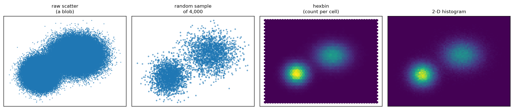
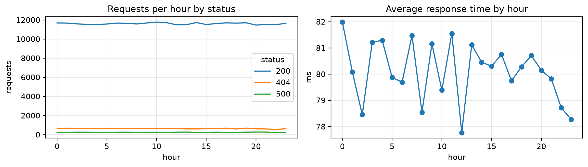

The one idea to take away: a relational database makes you decide the shape of your data before you store it. NoSQL databases let you decide later — and charge you for that flexibility somewhere else.
A note on running this chapter: the MongoDB and Cassandra blocks need a running database server, so they are shown for reference. The executable cells implement the same query model in plain Python, and every visualization cell runs.
17.1 🎯 Learning outcomes
By the end of this chapter you can:
Say why a fixed table schema becomes a problem at scale.
Name the four NoSQL families and give a use case for each.
A relational database requires every row in a table to have the same columns. That rule is a feature — it is what makes SQL reliable — until two things happen: the records genuinely differ, and there are billions of them.
Relational (SQL)
NoSQL
Shape decided
before you store anything
as you store
Every record
has the same columns
can differ
Adding a field
changes the table, for every row
affects only new records
Scales by
buying a bigger machine
adding more machines
Guarantees
strong consistency
usually eventual consistency
Best for
money, bookings, anything that must balance
logs, profiles, catalogues, sensors
Tip🧠 Analogy — the filing cabinet and the folders
A filing cabinet has labelled drawers of identical forms. Everything is findable and tidy — but a document that does not fit the form cannot go in without redesigning the form and refiling everything.
A folder system lets each folder hold whatever that case needed. Nothing is rejected. The cost is that you can no longer assume any two folders contain the same things.
Neither is better. They fail differently, and you choose which failure you can live with.
18.1.1 Demo 1 — records that genuinely do not fit one table
import pandas as pd, json# A real product catalogue, stored as JSON. A book, a shirt and a laptop# share almost no attributes.products = json.loads(open("datasets/product_catalog.json").read())print("As documents — each keeps exactly the fields it needs:")print(json.dumps(products, indent=1)[:420], "...\n")print("Forced into one table:")table = pd.DataFrame(products)print(table.to_string(index=False))print(f"\n{table.shape[1]} columns, and {table.isna().sum().sum()} of "f"{table.size} cells are empty ({table.isna().sum().sum()/table.size:.0%}).")print("Add a fourth product type and the table grows more columns and more blanks.")
As documents — each keeps exactly the fields it needs:
[
{
"sku": "B-1",
"name": "Data Science Handbook",
"price": 899,
"author": "R. Iyer",
"pages": 412,
"isbn": "978-1"
},
{
"sku": "S-7",
"name": "Cotton Shirt",
"price": 1299,
"size": "M",
"colour": "blue",
"material": "cotton"
},
{
"sku": "L-9",
"name": "UltraBook 14",
"price": 74999,
"ram_gb": 16,
"cpu": "i7",
"warranty_months": 24,
"ports": [
"USB-C",
"HDMI"
]
}
] ...
Forced into one table:
sku name price author pages isbn size colour material ram_gb cpu warranty_months ports
B-1 Data Science Handbook 899 R. Iyer 412.0 978-1 NaN NaN NaN NaN NaN NaN NaN
S-7 Cotton Shirt 1299 NaN NaN NaN M blue cotton NaN NaN NaN NaN
L-9 UltraBook 14 74999 NaN NaN NaN NaN NaN NaN 16.0 i7 24.0 [USB-C, HDMI]
13 columns, and 20 of 39 cells are empty (51%).
Add a fourth product type and the table grows more columns and more blanks.
That blank ratio is the argument. In a relational design you would build separate tables and join them — correct, and considerably more work when new product types arrive weekly.
18.2 2. The four families
Family
Stores
Best at
Examples
Document
JSON-like records
flexible records with nesting
MongoDB, CouchDB
Wide-column
rows with millions of possible columns
huge volume, known queries
Cassandra, HBase
Key–value
one value per key
caching, sessions
Redis, DynamoDB
Graph
nodes and relationships
networks, recommendations
Neo4j
18.3 3. The CAP theorem
When a distributed database’s machines cannot talk to each other, you must choose between giving a possibly stale answer and giving no answer. You cannot have both.
Letter
Means
C — Consistency
every read gets the most recent write
A — Availability
every request gets an answer
P — Partition tolerance
the system keeps working when the network splits
Networks fail, so P is not optional. The real choice is C or A.
18.3.1 Demo 2 — the trade-off, made concrete
primary = {"name": "primary", "balance": 1000}replica = {"name": "replica", "balance": 1000, "can_hear_primary": True}print("Network is healthy:")primary["balance"] +=500replica["balance"] = primary["balance"]print(" wrote ₹500 and copied it to the replica")print(f" replica reads ₹{replica['balance']}")print("\nNetwork splits — the replica can no longer hear the primary:")replica["can_hear_primary"] =Falseprimary["balance"] +=300print(" wrote ₹300 to the primary only")print("\nA client now reads from the replica:")print(f" choosing AVAILABILITY : ₹{replica['balance']} ← an answer, but stale")if replica["balance"] != primary["balance"]:print(" choosing CONSISTENCY : refused, because the replica may be stale")print(f"\n the true balance on the primary is ₹{primary['balance']}")
Network is healthy:
wrote ₹500 and copied it to the replica
replica reads ₹1500
Network splits — the replica can no longer hear the primary:
wrote ₹300 to the primary only
A client now reads from the replica:
choosing AVAILABILITY : ₹1500 ← an answer, but stale
choosing CONSISTENCY : refused, because the replica may be stale
the true balance on the primary is ₹1800
Warning⚠️ This is a business decision, not a technical one
For a bank balance, a stale answer is unacceptable — choose consistency and refuse to answer.
For a product page view count, refusing to load the page is far worse than showing a count that is thirty seconds old — choose availability.
The engineer does not get to decide this alone. It is a question about what the business can tolerate.
19 Part B — Document stores
19.1 4. MongoDB’s model
MongoDB stores documents — JSON-like records — inside collections.
Relational word
MongoDB word
table
collection
row
document
column
field
join
usually embedding instead
The big design difference: MongoDB prefers to embed related data inside one document rather than join across collections. An order carries its line items inside it, so fetching the order is one read rather than a join.
19.1.1 Demo 3 — documents as simple dictionaries
To make the query model concrete, start with a plain Python list. Each document is a dictionary, and the documents do not have to share the same fields.
import jsonsales = json.loads(open("datasets/store_sales.json").read())print(f"{len(sales)} documents loaded from datasets/store_sales.json\n")print("All Mumbai sales:")for doc in sales:if doc.get("city") =="Mumbai":print(" ", doc)print("\nSales over ₹1,000 per unit:")for doc in sales:if doc.get("price", 0) >1000:print(" ", doc)print("\nDocuments that HAVE a loyalty_points field (others simply lack it):")for doc in sales:if"loyalty_points"in doc:print(" ", doc)
The last query is the point. In a relational table, loyalty_points would exist as a NULL on every other row. Here, the field is genuinely absent, and asking for its presence is a meaningful question.
19.2 5. The aggregation pipeline
MongoDB’s aggregation pipeline is a list of stages, each feeding the next. It is groupby written as a sequence.
Stage
Does
pandas equivalent
$match
keep matching documents
df[df.x > 1]
$group
group and aggregate
df.groupby(...).agg(...)
$sort
order the results
df.sort_values(...)
$project
choose or compute fields
df[["a","b"]]
$limit
keep the first n
df.head(n)
19.2.1 Demo 4 — aggregation stages by hand
print("Total revenue per item, biggest first:")by_item = {}for doc in sales: item = doc["item"]if item notin by_item: by_item[item] = {"revenue": 0, "units": 0} by_item[item]["revenue"] += doc["price"] by_item[item]["units"] += doc["qty"]item_rows = []for item, totals in by_item.items(): item_rows.append({"item": item, "revenue": totals["revenue"], "units": totals["units"]})item_rows =sorted(item_rows, key=lambda row: row["revenue"], reverse=True)for row in item_rows:print(f" {row['item']:<10} revenue ₹{row['revenue']:>8,} units {row['units']:>3}")print("\nOnline sales only, grouped by city:")online_docs = [doc for doc in sales if doc["channel"] =="online"] # $matchby_city = {}for doc in online_docs: # $group city = doc["city"] by_city[city] = by_city.get(city, 0) + doc["price"]city_rows = [{"city": city, "revenue": revenue} for city, revenue in by_city.items()]city_rows =sorted(city_rows, key=lambda row: row["revenue"], reverse=True) # $sortfor row in city_rows:print(f" {row['city']:<10} ₹{row['revenue']:>8,}")
Total revenue per item, biggest first:
laptop revenue ₹ 149,998 units 3
keyboard revenue ₹ 1,499 units 3
mouse revenue ₹ 998 units 14
Online sales only, grouped by city:
Mumbai ₹ 74,999
Delhi ₹ 74,999
Pune ₹ 499
19.2.2 Demo 5 — the same thing in pandas, for comparison
import pandas as pddf = pd.DataFrame(sales)print("pandas equivalent of the first pipeline:")print(df.groupby("item").agg(revenue=("price", "sum"), units=("qty", "sum")) .sort_values("revenue", ascending=False))print("\nSame answer. The difference is WHERE it runs: the pipeline executes inside")print("the database, so only the small summary crosses the network.")
pandas equivalent of the first pipeline:
revenue units
item
laptop 149998 3
keyboard 1499 3
mouse 998 14
Same answer. The difference is WHERE it runs: the pipeline executes inside
the database, so only the small summary crosses the network.
19.3 6. Real pymongo
Against a real MongoDB server, the same stages become a pipeline list. This block needs a running MongoDB, so it is shown rather than executed.
from pymongo import MongoClientimport pandas as pdclient = MongoClient("mongodb://localhost:27017/")db = client["store_db"]sales = db["sales"]# INSERT — documents need not share a shapesales.insert_many([ {"item": "laptop", "city": "Mumbai", "qty": 1, "price": 74999, "channel": "online"}, {"item": "laptop", "city": "Delhi", "qty": 2, "price": 74999, "channel": "online","loyalty_points": 300},])# INDEX — without this, every query scans every documentsales.create_index([("city", 1), ("item", 1)])# FINDfor doc in sales.find({"price": {"$gt": 1000}}).limit(5):print(doc)# AGGREGATE — the Demo 4 stages, run inside the databasepipeline = [ {"$match": {"channel": "online"}}, {"$group": {"_id": "$city", "revenue": {"$sum": "$price"}, "orders": {"$sum": 1}}}, {"$sort": {"revenue": -1}},]summary = pd.DataFrame(list(sales.aggregate(pipeline))).rename(columns={"_id": "city"})client.close()
Warning⚠️ Aggregate in the database, not in Python
It is tempting to write pd.DataFrame(list(sales.find({}))) and use pandas. On a collection of fifty million documents that pulls every document across the network into memory, and will simply fail.
Push $match, $group and $limit into the database. Bring back the summary, not the data.
20 Part C — Wide-column stores
20.1 7. Cassandra, and query-first design
Cassandra is built for enormous write volumes and predictable reads. In exchange, you must know your queries before you design your tables.
This is the opposite of relational design. In SQL you normalise the data and write whatever query you like afterwards. In Cassandra:
Write down the exact questions the application will ask
Design one table per question
Duplicate data across those tables without embarrassment
Two ideas control everything:
Key part
Decides
Partition key
which machine the row lives on. Every query must supply it.
Clustering key
how rows are sorted within that partition
-- Question: "show me one user's recent orders, newest first"CREATETABLE orders_by_user ( user_id uuid, -- partition key: picks the machine order_date timestamp, -- clustering key: sorts within the partition order_id uuid, total decimal,PRIMARYKEY (user_id, order_date)) WITH CLUSTERING ORDERBY (order_date DESC);-- This is fast: it supplies the partition key.SELECT*FROM orders_by_user WHERE user_id = ? LIMIT20;-- This is NOT possible efficiently — no partition key given.-- Cassandra will refuse it rather than scan every machine.SELECT*FROM orders_by_user WHERE total >5000;-- The Cassandra answer: build a SECOND table for that question,-- and write every order to both.CREATETABLE orders_by_day (daydate, total decimal, order_id uuid, user_id uuid,PRIMARYKEY (day, total, order_id)) WITH CLUSTERING ORDERBY (total DESC);
20.1.1 Demo 6 — why the partition key decides everything
import hashlibdef which_machine(partition_key, n_machines=6): h = hashlib.md5(str(partition_key).encode()).hexdigest()returnint(h, 16) % n_machinesusers = [f"user_{i}"for i inrange(1, 13)]print("Where each user's rows live:")for u in users[:6]:print(f" {u:<8} → machine {which_machine(u)}")print("\nQuery WITH the partition key → one machine answers")print("Query WITHOUT it → all 6 machines must be asked and merged")print(" ...which is why Cassandra refuses such queries by default.")from collections import Counterspread = Counter(which_machine(u) for u in [f"user_{i}"for i inrange(2_000)])print(f"\nRows per machine across 2,000 users: {sorted(spread.values())}")print("Evenly spread — a good partition key. A key like 'country' would put")print("half your data on one machine and melt it.")
Where each user's rows live:
user_1 → machine 5
user_2 → machine 0
user_3 → machine 0
user_4 → machine 2
user_5 → machine 1
user_6 → machine 0
Query WITH the partition key → one machine answers
Query WITHOUT it → all 6 machines must be asked and merged
...which is why Cassandra refuses such queries by default.
Rows per machine across 2,000 users: [286, 322, 338, 347, 352, 355]
Evenly spread — a good partition key. A key like 'country' would put
half your data on one machine and melt it.
MongoDB Cassandra SQL
--------------------------------------------------------------------------------------------
data shape documents, flexible wide rows, fixed queries rows and columns
query flexibility high low — plan queries first highest (SQL)
write throughput high very high moderate
joins avoided; embed not supported core feature
consistency tunable tunable, usually eventual strong
good for catalogues, profiles time series, IoT, logs money, bookings
21 Part D — Charts at scale
21.1 8. Why a scatter plot of ten million points is useless
Draw ten million dots and you get a solid rectangle. The dots overlap — a phenomenon called overplotting — and where one dot sits, a thousand look identical.
21.1.1 Demo 8 — overplotting, and three fixes
import numpy as np, matplotlib.pyplot as pltimport pandas as pdpts = pd.read_csv("datasets/overplot_points.csv")x, y = pts["x"].values, pts["y"].valuesn =len(pts)print(f"{n:,} points loaded from datasets/overplot_points.csv\n")rng = np.random.default_rng(91)fig, ax = plt.subplots(1, 4, figsize=(14, 3.1))ax[0].scatter(x, y, s=1, alpha=.5)ax[0].set_title("raw scatter\n(a blob)", fontsize=9)idx = rng.choice(n, 4_000, replace=False)ax[1].scatter(x[idx], y[idx], s=4, alpha=.5)ax[1].set_title("random sample\nof 4,000", fontsize=9)ax[2].hexbin(x, y, gridsize=45, cmap="viridis")ax[2].set_title("hexbin\n(count per cell)", fontsize=9)ax[3].hist2d(x, y, bins=90, cmap="viridis")ax[3].set_title("2-D histogram", fontsize=9)for a in ax: a.set_xticks([]); a.set_yticks([])plt.tight_layout(); plt.show()print(f"{n:,} points plotted four ways.")print("The raw scatter hides that there are TWO groups. The other three show it.")
200,000 points loaded from datasets/overplot_points.csv

Figure 21.1: Two hundred thousand points. Raw scatter shows a blob; sampling, hexbin and a 2-D histogram each recover the structure.
200,000 points plotted four ways.
The raw scatter hides that there are TWO groups. The other three show it.
21.2 9. Aggregate before you plot
The most effective technique is to never send the raw rows to the chart at all. Summarise in the database, plot the summary.
21.2.1 Demo 9 — the size of what crosses the network
import matplotlib.pyplot as pltpivot = summary.pivot(index="hour", columns="status", values="requests")fig, ax = plt.subplots(1, 2, figsize=(11, 3.2))pivot.plot(ax=ax[0]); ax[0].set_title("Requests per hour by status"); ax[0].set_ylabel("requests")summary.groupby("hour")["avg_ms"].mean().plot(ax=ax[1], marker="o")ax[1].set_title("Average response time by hour"); ax[1].set_ylabel("ms")plt.tight_layout(); plt.show()

Figure 21.2: A chart of 300,000 rows, drawn from a 72-row summary.
21.3 10. Sampling honestly
A sampled chart is an estimate, and it must be labelled as one.
21.3.1 Demo 10 — how wrong a sample can be, and how to say so
import numpy as nppopulation = pd.read_csv("datasets/sampling_population.csv")["value"].valuesrng = np.random.default_rng(93)truth = population.mean()print(f"true mean over all {len(population):,} values: {truth:.3f}\n")print(f"{'sample size':>12}{'estimate':>10}{'95% margin':>12}{'covers truth?':>15}")print("-"*54)for size in [100, 1_000, 10_000, 100_000]: s = rng.choice(population, size, replace=False) margin =1.96* s.std() / np.sqrt(size) covers =abs(s.mean() - truth) <= marginprint(f"{size:>12,}{s.mean():>10.3f}{margin:>11.3f}{'yes'if covers else'no':>14}")print("\nA sample of 10,000 estimates the mean of 300,000 to within a fraction of")print("a percent. Sampling is not a compromise — it is usually the right answer.")
true mean over all 300,000 values: 79.925
sample size estimate 95% margin covers truth?
------------------------------------------------------
100 80.567 13.449 yes
1,000 82.709 3.548 yes
10,000 78.929 1.105 yes
100,000 79.916 0.351 yes
A sample of 10,000 estimates the mean of 300,000 to within a fraction of
a percent. Sampling is not a compromise — it is usually the right answer.
Warning⚠️ Label every sampled chart
A chart built from a 1% sample looks exactly like one built from all the data. Put the sample size and the margin in the caption, or somebody will read a difference off it that is smaller than the sampling error.
And remember Session 2: a sample must be random.df.head(10000) is not a sample — it is whatever was written first, which is usually ordered by time or by ID.
import numpy as np, pandas as pd# A real file, stored in signup order — and average spend has risen over time.customers = pd.read_csv("datasets/customers_by_signup.csv")print(f"true mean spend : ₹{customers['spend'].mean():>7.0f}")print(f"df.head(5000) : ₹{customers['spend'].head(5000).mean():>7.0f} ← earliest customers only")print(f"df.sample(5000) : ₹{customers['spend'].sample(5000, random_state=1).mean():>7.0f} ← correct")
true mean spend : ₹ 550
df.head(5000) : ₹ 209 ← earliest customers only
df.sample(5000) : ₹ 549 ← correct
22 🎯 Tasks
Note✏️ Practise
Task 1 — Write a pipeline. Using aggregate from Demo 4, find the average price per city for store sales only, sorted highest first.
Task 2 — Design for Cassandra. An app must answer “show a user’s last 20 orders” and “show the 10 largest orders today”. Write the two CREATE TABLE statements and say what has to be duplicated.
Task 3 — Fix a chart. Generate 5 million points in three clusters and produce one chart that shows all three groups clearly. Say which technique you used and why.
Task 4 — Quantify a sample. For the population in Demo 10, find the smallest sample size whose 95% margin is under 1% of the true mean.
NoteSolutions
import numpy as npprint("Task 2 — two tables, because Cassandra plans tables around queries:")print(""" CREATE TABLE orders_by_user ( user_id uuid, order_date timestamp, order_id uuid, total decimal, PRIMARY KEY (user_id, order_date) ) WITH CLUSTERING ORDER BY (order_date DESC); CREATE TABLE orders_by_day ( day date, total decimal, order_id uuid, user_id uuid, PRIMARY KEY (day, total, order_id) ) WITH CLUSTERING ORDER BY (total DESC);""")print(" Every order is written to BOTH tables. That duplication is deliberate:")print(" storage is cheap, and it is what makes both queries fast.\n")# Task 4 — smallest sample whose margin is under 1% of the meanpopulation = pd.read_csv("datasets/sampling_population.csv")["value"].valuesrng = np.random.default_rng(93)truth = population.mean()for size in [100, 300, 1_000, 3_000, 10_000, 30_000]: s = rng.choice(population, size, replace=False) margin =1.96* s.std() / np.sqrt(size)print(f"Task 4 — n={size:>6,}: margin ±{margin:.3f} = {margin/truth:.2%} of the mean"f"{' ← first under 1%'if margin/truth <0.01and size >=1000else''}")
Task 2 — two tables, because Cassandra plans tables around queries:
CREATE TABLE orders_by_user (
user_id uuid, order_date timestamp, order_id uuid, total decimal,
PRIMARY KEY (user_id, order_date)
) WITH CLUSTERING ORDER BY (order_date DESC);
CREATE TABLE orders_by_day (
day date, total decimal, order_id uuid, user_id uuid,
PRIMARY KEY (day, total, order_id)
) WITH CLUSTERING ORDER BY (total DESC);
Every order is written to BOTH tables. That duplication is deliberate:
storage is cheap, and it is what makes both queries fast.
Task 4 — n= 100: margin ±13.449 = 16.83% of the mean
Task 4 — n= 300: margin ±6.206 = 7.76% of the mean
Task 4 — n= 1,000: margin ±3.377 = 4.22% of the mean
Task 4 — n= 3,000: margin ±2.050 = 2.56% of the mean
Task 4 — n=10,000: margin ±1.111 = 1.39% of the mean
Task 4 — n=30,000: margin ±0.630 = 0.79% of the mean ← first under 1%
23 ❓ MCQs
Q1. Your product catalogue has 40 product types with almost no shared attributes. Which storage?
One wide SQL table.
A document store such as MongoDB.
A key–value store.
Q2. The network splits and a replica may be stale. A banking system should:
Serve the possibly-stale balance.
Refuse to answer — choose consistency.
Serve a cached value.
Q3. In Cassandra, why must a query supply the partition key?
For security.
It determines which machine holds the row; without it every machine must be asked.
It is the primary key.
Q4. You must chart ten million points. What do you do first?
Plot them all and reduce the marker size.
Aggregate or bin them, and plot the summary.
Plot the first 10,000 rows.
Q5.df.head(10_000) on a table ordered by signup date is:
A valid random sample.
A biased sample — it contains only the earliest records.
Fine if the table is large.
NoteAnswers
A1 — (b). Demo 1 measured the blank ratio a single table produces.
A2 — (b). Demo 2’s warning: this is a business decision, and for money the answer is consistency.
A3 — (b). Demo 6 showed rows spread by a hash of the partition key.
A4 — (b). Demo 9 reduced 300,000 rows to 72 and lost nothing the chart needed.
A5 — (b). The final demo measured ₹209 from head() against a true mean of ₹550.